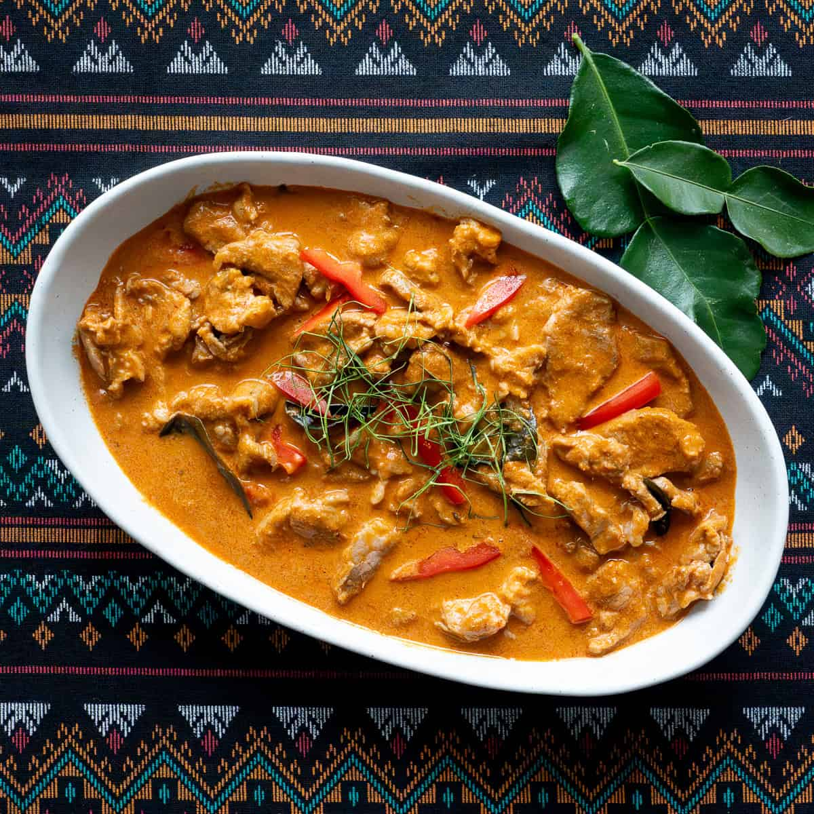

Back to Recipes
Panang Curry

Description
Panang curry is a rich and creamy Thai curry made with coconut milk, Panang curry paste, and your choice of protein. It's known for its slightly sweet and nutty flavor, making it a favorite among Thai cuisine lovers.
Ingredients
- Panang Curry Paste: This is the key ingredient that gives the curry its unique flavor. You can find it in Asian grocery stores or make your own.
- Coconut Milk: Full-fat coconut milk adds creaminess and richness to the curry.
- Protein: You can use chicken, beef, shrimp, or tofu as your protein choice.
- Vegetables: Add bell peppers, bamboo shoots, and Thai basil for added flavor and texture.
- Sugar: A touch of sugar balances the flavors in the curry.
- Lime Leaves: These add a fragrant citrus aroma to the dish.
Instructions
- In a large pan, heat some oil and add the Panang curry paste. Cook until fragrant.
- Add the coconut milk and bring to a simmer.
- Add your choice of protein and cook until done.
- Add vegetables, sugar, and lime leaves. Simmer for a few more minutes.
- Serve hot with steamed rice.